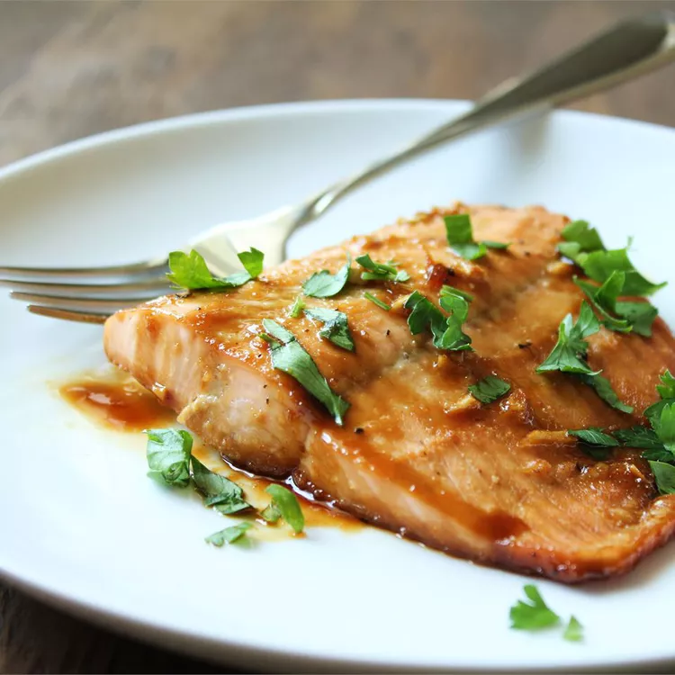

Maple Salmon

Restaurant-worthy, easy to make with simple ingredients
Salmon baked at a low temperature until medium-rare delivers a silky
texture that tastes special enough to make it a festive centerpiece. This
easy dish works any night of the week, since it comes together in less
than half an hour.
Ingredients
- ¼ cup maple syrup
- 2 tablespoons soy sauce
- 1 clove garlic, minced
- ¼ teaspoon garlic salt
- ⅛ teaspoon ground black pepper
- 1 pound salmon
Steps
-
Stir maple syrup, soy sauce, garlic, garlic salt, and pepper together in
a small bowl.
-
Cut salmon into 4 equal-sized fillets; place in a shallow glass baking
dish and coat with maple syrup mixture. Cover the dish and marinate
salmon in the refrigerator for 30 minutes, turning once halfway.
- Preheat the oven to 400 degrees F (200 degrees C).
-
Place the baking dish in the preheated oven and bake salmon uncovered
until flesh easily flakes with a fork, about 20 minutes.
Return to the Homepage